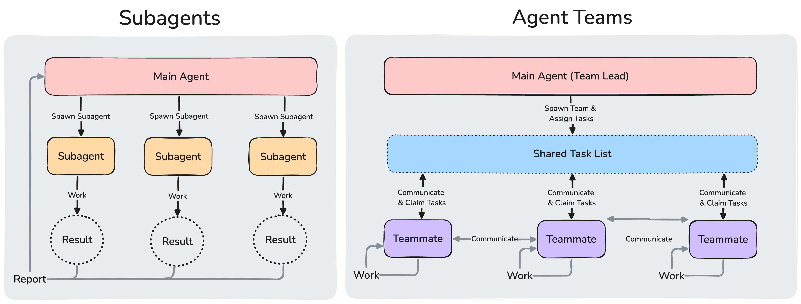

协调 Claude Code 会话团队
协调多个 Claude Code 实例作为一个团队一起工作，具有共享任务、代理间消息传递和集中管理。
Agent teams 是实验性功能，默认禁用。通过在你的 settings.json 或环境中设置 CLAUDE_CODE_EXPERIMENTAL_AGENT_TEAMS=1 来启用它们。如果没有该变量，会话启动时不会设置任何团队，不会写入团队目录，Claude 也不会生成或提议队友。Agent teams 在 已知限制 中存在关于会话恢复、任务协调和关闭行为的问题。
Agent teams 让你协调多个 Claude Code 实例一起工作。一个会话充当团队负责人，协调工作、分配任务和综合结果。队友独立工作，每个都在自己的 context window 中，并直接相互通信。你也可以直接与任何队友互动，无需通过负责人。
在设置团队之前，请检查是否有更轻量级的选项可以完成工作。Subagents 在单个会话中工作，通过 跨会话消息传递，Claude 可以在你自己运行的会话之间传递发现。
何时使用 agent teams
Agent teams 最适合用于并行探索能增加真实价值的任务。有关完整场景，请参阅 用例示例。最强的用例是：
- 研究和审查：多个队友可以同时调查问题的不同方面，然后分享和质疑彼此的发现
- 新模块或功能：队友可以各自拥有一个独立的部分，不会相互干扰
- 使用竞争假设进行调试：队友并行测试不同的理论，更快地收敛到答案
- 跨层协调：跨越前端、后端和测试的更改，每个由不同的队友负责
Agent teams 增加了协调开销，使用的令牌数量明显多于单个会话。当队友可以独立运作时，它们效果最好。对于顺序任务、同一文件编辑或有许多依赖关系的工作，单个会话或 subagents 更有效。
与 subagents 比较
Agent teams 和 subagents 都让你并行化工作，但它们的运作方式不同。对于不带团队的独立会话，这些会话相互传递消息，请参阅 跨会话消息传递。

Subagents 向主代理报告结果。在 agent teams 中，队友共享任务列表、认领工作并直接相互通信。
| Subagents | Agent teams | |
|---|---|---|
| Context | 自己的 context window；结果返回给调用者 | 自己的 context window；完全独立 |
| 通信 | 向调用者返回结果。Claude 在生成子代理时为其命名的子代理也可以 相互发送消息 | 队友直接相互发送消息 |
| 协调 | 主代理管理所有工作 | 通过消息进行自我协调，加上具有 Task tools 的代理 的共享任务列表 |
| 最适合 | 只有结果重要的专注任务 | 需要讨论和协作的复杂工作 |
| 令牌成本 | 较低：结果汇总回主 context | 较高：每个队友是一个独立的 Claude 实例 |
当你需要快速、专注的工作人员报告结果时，使用 subagents。当队友需要分享发现、相互质疑和自我协调时，使用 agent teams。
启用 agent teams
Agent teams 默认禁用。通过将 CLAUDE_CODE_EXPERIMENTAL_AGENT_TEAMS 环境变量设置为 1，在你的 shell 环境中或通过 settings.json 来启用它：
{
"env": {
"CLAUDE_CODE_EXPERIMENTAL_AGENT_TEAMS": "1"
}
}
启用 agent teams 也会改变普通的委派方式。Claude 可能会自行命名一个子代理，当启用 agent teams 时，Claude 命名的子代理会作为队友启动，因此即使你没有要求，团队也可以形成。有关更多信息，请参阅Claude 如何启动 agent teams；要关闭此行为，请参阅Claude 生成队友而不是子代理。
生成队友也需要交互式会话。在非交互模式中使用 -p 标志，包括 Agent SDK 会话，Claude 不会生成队友，即使启用了 agent teams，Claude 命名的子代理也会作为普通子代理运行。
启动你的第一个 agent team
启用 agent teams 后，用自然语言描述你想要的任务和队友。Claude 会生成他们并根据你的提示协调工作。
这个例子效果很好，因为三个角色是独立的，可以在不相互等待的情况下探索问题：
I'm designing a CLI tool that helps developers track TODO comments across
their codebase. Spawn three teammates to explore this from different angles:
one on UX, one on technical architecture, one playing devil's advocate.
从那里，Claude 会填充一个 共享任务列表，在 具有 Task 工具的会话 中为每个角度生成队友，让他们探索问题，并在完成时综合发现。
Claude 有时可能会使用 subagents 而不是创建一个 team。Subagents 在 agent 面板中与队友显示在同一位置，因此仅凭面板无法确认是否形成了 team。如果 Claude 生成了 subagents，请再次询问并明确请求一个 agent team。
负责人的终端在提示输入下方的 agent 面板中列出队友。从该面板中：
- 向上和向下箭头：选择一个队友
- Enter：打开所选队友的记录并直接向其发送消息
- Escape：清除选择。当你正在查看队友的记录时，Escape 会中断该队友的当前轮次
当任何队友或子代理仍在工作时，空闲队友的行会保留在面板中，因此您可以选择它来查看其会话记录或向其分配更多工作。一旦面板中的每个 Agent 都处于空闲状态，空闲行会在 30 秒后隐藏，并在队友的下一轮次时重新出现；队友在隐藏时仍然保持运行并可寻址。
当超过三个队友同时处于空闲状态时，前三个之外的行会折叠成一行，计数折叠的队友，例如当五个处于空闲状态时显示 2 idle agents。选择它并按 Enter 展开折叠的行，或按 Esc 再次折叠它们。工作中的队友、失败的队友和你正在查看的队友始终保持自己的行。
如果你想让每个队友在自己的分割窗格中，请参阅 选择显示模式。
控制您的 agent team
用自然语言告诉负责人（lead）您想要什么。它会根据您的指示处理团队协调、任务分配和委派。
选择显示模式
Agent team 支持两种显示模式：
- 进程内：所有队友都在您的主终端内运行。在 Agent 面板中使用上下方向键选择一个队友，然后按 Enter 查看它，并直接输入内容向其发送消息。适用于任何终端，无需额外设置。
- 分屏窗格：每个队友拥有自己的窗格。您可以同时看到所有人的输出，并点击进入某个窗格直接与之交互。需要 tmux 或 iTerm2。
tmux 在某些操作系统上存在已知限制，传统上在 macOS 上效果最佳。建议在 iTerm2 中使用 tmux -CC 作为进入 tmux 的方式。
默认值为 "in-process"。设置为 "auto" 时，如果您已在 tmux 会话中运行，或者您的终端是已安装 it2 CLI 的 iTerm2，则启用分屏窗格，否则回退到进程内模式。"tmux" 设置会启用分屏窗格模式，并根据您的终端自动检测使用 tmux 还是 iTerm2。
设置为 "iterm2" 可显式使用 iTerm2 原生分屏窗格。此模式需要 it2 CLI，如果缺少 it2，会显示错误并附带安装命令。当您的终端是 iTerm2 且 tmux 可作为回退选项时，在 "auto" 或 "tmux" 下会出现设置提示，询问是安装 it2 还是切换到 tmux。
要覆盖默认值，请在 ~/.claude/settings.json 中设置 teammateMode：
{
"teammateMode": "auto"
}
要为单个会话设置模式，请将其作为标志传入：
claude --teammate-mode auto
--teammate-mode 标志是实验性的，不会出现在 claude --help 中。
分屏窗格模式需要 tmux，或者安装了 it2 CLI 的 iTerm2。手动安装方法：
- tmux：通过系统的包管理器安装。有关特定平台的说明，请参阅 tmux wiki。
- iTerm2：安装
it2CLI，然后在 iTerm2 → Settings → General → Magic → Enable Python API 中启用 Python API。
指定队友和模型
Claude 会根据您的任务决定生成的队友数量，您也可以准确指定您想要的内容：
Spawn 4 teammates to refactor these modules in parallel. Use Sonnet for
each teammate.
Claude Code 按以下顺序，取第一个适用的来源作为每个队友的模型：
- 您的生成提示词中为该队友指定的模型。
- 对于从子代理定义生成的队友，使用该定义的
model，其中inherit表示选择负责人的模型。 CLAUDE_CODE_SUBAGENT_MODEL，当其设置为inherit以外的任何值时。- 负责人的当前模型。
如果已安装的 mod 在其 agent.spawn hook 中设置了模型，Claude Code 会使用该模型代替第一个来源。
如果您设置了 CLAUDE_CODE_SUBAGENT_MODEL_FORCE=1，则前两个来源不适用。当 CLAUDE_CODE_SUBAGENT_MODEL 这个环境变量设置为 inherit 以外的任何值时，Claude Code 从该变量中选取每个队友的模型；否则从负责人的当前模型中选取。需要 Claude Code v2.1.257 或更高版本。
在 v2.1.251 之前，CLAUDE_CODE_SUBAGENT_MODEL 在此顺序中排在首位。
teammateDefaultModel 已在 v2.1.234 中移除；Claude Code 会忽略残留的值。请改为在提示词中指定模型。
Claude Code 会根据您组织的 availableModels 允许列表检查它为队友选择的模型。当允许列表阻止某个值时，Claude Code 会替换为另一个模型：
- 系列别名，例如
opus：在 Anthropic API 和 Claude Platform on AWS 上，Claude Code 会在允许列表允许的该系列最新版本上运行队友。在使用提供商特定模型 ID 的提供商上，替换机制不起作用，被阻止的别名会像其他被阻止的值一样，按照下一条规则回退 - 任何其他被阻止的值，包括在替换机制不起作用的提供商上的系列别名，或其系列没有允许版本的别名：Claude Code 会改为在负责人的模型上运行队友。如果您设置了
CLAUDE_CODE_SUBAGENT_MODEL，Claude Code 会先尝试该模型，并遵循同样的规则
默认情况下，队友继承负责人的 effort 级别。在分屏窗格模式下，此行为从 v2.1.186 起适用；早期版本不会将负责人的会话 effort 传递给分屏窗格队友。
让队友在实施前先制定计划
对于复杂或有风险的任务，您可以让队友在实施前先制定计划。当负责人处于计划模式时由 Claude 生成的队友，会在只读的计划模式下工作，直到其计划准备就绪。先将负责人切换到计划模式，然后请求生成队友：
Spawn an architect teammate to refactor the authentication module.
当该队友完成计划后，它会向负责人发送计划批准请求。如果自该队友生成以来您未更改其权限模式，Claude Code 会在请求到达后立即批准该计划，无需负责人审查。队友的编辑和命令仍需经过权限中所述的权限提示。获得批准后，队友退出计划模式并开始实施。
如果您在查看某个正在运行的进程内队友的会话时按 Shift+Tab 将其置于计划模式，则该次运行的计划将由负责人审查，而不是由 Claude Code 批准。系统不会要求您批准；负责人会批准该计划或将其退回修改。
直接与队友对话
每个队友都是一个完整、独立的 Claude Code 会话。您可以直接向任何队友发送消息，以提供额外指示、询问后续问题或调整其方法。
- 进程内模式：在 Agent 面板中使用上下方向键选择一个队友，然后按 Enter 查看其会话，并输入内容向其发送消息。在选中的队友上按
x可将其停止。按 Ctrl+T 可切换任务列表。 - 分屏窗格模式：点击进入队友的窗格，直接与其会话交互。每个队友都拥有其自身终端的完整视图。
当您查看进程内队友时，纯文本和 skill 会发送给该队友，而内置命令会发送到负责人的会话，并带有以下保护措施：
/compact、/clear和/rewind作用于负责人的对话，因此在此视图中运行其中任何一个之前，Claude Code 会要求您确认。/model和/fast设置的是负责人的模型和快速模式，而不是队友的，因此它们不会在此视图中运行。系统会显示通知告知原因。
队友的模型和快速模式在其生成时即已固定。
分配和认领任务
共享任务列表用于协调整个团队的工作。负责人创建任务，队友逐一完成。任务有三种状态：待处理、进行中和已完成。任务还可以依赖其他任务，在这些任务完成之前，它会在任务列表中显示为已阻塞。队友不会自行认领已阻塞的任务，但您或负责人仍可以分配它。
没有 Task 工具的 Agent 改为通过消息进行协调，而不是通过共享任务列表。
负责人可以显式分配任务，队友也可以自行认领：
- 负责人分配：告诉负责人将哪个任务交给哪个队友
- 自行认领：完成一个任务后，队友会自行领取下一个未分配、未被阻塞的任务
任务认领使用文件锁定，以防止多个队友同时尝试认领同一任务时出现竞争条件。
关闭队友
要正常结束某个队友的会话，请按名称指代它。例如，对于名为 researcher 的队友：
Ask the researcher teammate to shut down
负责人会发送关闭请求。队友可以批准并正常退出，也可以拒绝并给出解释。
团队的共享目录会在会话结束时自动清理，因此无需单独的清理步骤。有关哪些目录会被删除、哪些会保留在磁盘上，请参阅架构。
使用 hook 强制执行质量关卡
使用 hook 在队友完成工作或任务被创建或完成时强制执行规则：
TeammateIdle：在队友即将进入空闲状态时运行。以代码 2 退出可发送反馈并让队友继续工作。TaskCreated：在任务正在创建时运行。以代码 2 退出可阻止创建并发送反馈。TaskCompleted：在任务正被标记为完成时运行。以代码 2 退出可阻止完成并发送反馈。
Agent teams 如何工作
本部分涵盖 agent teams 背后的架构和机制。如果你想开始使用它们，请参阅上面的 控制你的 agent team。
Claude 如何启动 agent teams
要启动一个团队，请向 Claude 请求队友。当 Claude 在启用 agent teams 的情况下调用 Agent tool 并使用 name 时，除非该调用是一个 fork 或在调用本身上传递 isolation，否则 Claude 会启动一个队友。Claude Code 不会要求你确认启动。
Claude 也会自动为普通 subagents 命名，以便稍后可以向它们发送消息。这些调用遵循相同的规则，所以即使你没有请求，团队也可能形成。如果你想要 subagents 而不是 agent teams，请 关闭 agent teams。
架构
Agent team 由以下部分组成：
| 组件 | 角色 |
|---|---|
| Team lead | 生成队友并协调工作的主 Claude Code 会话 |
| Teammates | 各自处理分配任务的独立 Claude Code 实例 |
| Task list | 队友认领和完成的共享工作项列表 |
| Mailbox | 代理之间通信的消息系统 |
每个 Agent 的邮箱是位于 ~/.claude/teams/{team-name}/inboxes/{agent-name}.json 的 JSON 文件。Claude Code 在读取邮箱文件时会验证每个条目。不匹配消息格式的条目会被报告为错误并从文件中删除；有效的消息仍然会被传递。
Claude Code 仅在写入收件人邮箱文件成功时才报告消息已发送，无论消息是纯文本还是结构化协议消息（如计划批准或关闭请求）。当写入失败时，例如因为磁盘已满或邮箱目录不可写，发送代理会收到错误，什么都不会被发送。有关错误消息和恢复步骤，请参阅 Failed to write to a teammate's inbox。
Claude Code 自动管理任务依赖关系：当队友完成其他任务依赖的任务时，被阻止的任务会自动解除阻止，无需你采取任何行动。
团队和任务存储在本地，名称来自会话派生的名称。名称是 session- 后跟会话 ID 的前八个字符：
- Team config：
~/.claude/teams/{team-name}/config.json。Claude Code 会在会话结束时删除团队配置目录。 - Task list：
~/.claude/tasks/{team-name}/。此目录在会话结束后仍保留在磁盘上。要更改 Claude Code 保留它的时长，请设置cleanupPeriodDays。
Claude Code 在会话启动时自动生成这两项，并在队友加入、空闲或离开时更新它们。
团队配置保存运行时状态，例如会话 ID 和 tmux 窗格 ID，所以不要手动编辑它或预先编写它：你的更改会在下一次状态更新时被覆盖。
要定义可重用的队友角色，请改用 subagent 定义。
团队配置包含一个 members 数组，其中包含每个成员的名称和代理 ID。负责人的条目始终携带代理类型 team-lead。队友的条目携带负责人在生成它时命名的任何代理类型，无论是 built-in type 还是 subagent definition，当负责人没有命名任何类型时省略该字段。队友可以读取此文件以发现其他团队成员。
没有项目级别的团队配置等效项。项目目录中的 .claude/teams/teams.json 之类的文件不被识别为配置；Claude 将其视为普通文件。
为队友使用 subagent 定义
当在任一显示模式中生成队友时，您可以引用来自项目、用户、托管或插件 子代理作用域 的 子代理 类型。这让您只需定义一次角色，例如安全审查员或测试运行器，并将其同时重用为委派的子代理和 agent team 队友。
要使用 subagent 定义，在要求 Claude 生成队友时按名称提及它：
Spawn a teammate using the security-reviewer agent type to audit the auth module.
Claude Code 读取你命名的 subagent 定义，并将其以下部分应用于队友。当一个部分取决于队友的 display mode 时，条目会说明：
tools：Claude Code 将队友限制为定义的tools列表中的工具。对于进程内队友，Claude Code 将SendMessage添加到该列表，在 具有 Task tools 的会话 中，它还添加TaskCreate、TaskGet、TaskList和TaskUpdate。model：当你的生成提示没有命名模型时，Claude Code 在任一显示模式中使用定义的model。请参阅 Claude Code 如何选择队友的模型。disallowedTools：对于进程内队友，Claude Code 会从队友的工具集中移除定义的disallowedTools中的工具。即使该列表中列出了SendMessage以及 Claude Code 添加的 Task 工具，它们仍然可用。effort：对于进程内队友，Claude Code 按照 frontmatter effort 规则 应用定义的effort。autoCompactWindow：对于进程内队友，Claude Code 按照 该字段的规则 应用定义的autoCompactWindow。分割窗格队友会忽略该字段。需要 Claude Code v2.1.296 或更高版本。- Body：对于进程内队友，Claude Code 将定义的主体附加到其默认系统提示作为额外指示。对于分割窗格队友，Claude Code 使用主体代替其默认系统提示。
skills：Claude Code 在任一显示模式中都不将定义的skills应用于队友。队友从你的项目和用户设置加载 skills。mcpServers：对于分割窗格队友，Claude Code 在 该字段的规则 下应用定义的mcpServers，这些规则涵盖使用--agent启动的会话。进程内队友忽略该字段，从你的项目和用户设置加载 MCP servers。
当 Claude 向一个不再运行的进程内队友发送消息时，Claude Code 会在同一会话中将其恢复，恢复为其保存的任何对话，并将消息作为其下一个提示给予它。在你恢复一个会话后，队友不会以这种方式被恢复，根据 恢复限制。
对于它恢复的队友，Claude Code 重新应用来自项目的 .claude/agents/ 目录或 --add-dir 目录的定义，仅当你 信任了代理文件所在的文件夹 时。信任父文件夹不算数。在那之前，队友会恢复时不带定义的任何工具或指示，仅保留 Claude Code 添加到每个进程内队友的工具。请参阅 the teammate's agent definition was not restored 了解通知文本。
权限
队友从负责人的权限模式开始，除了 dontAsk 模式，他们不继承该模式。如果负责人使用 --dangerously-skip-permissions 运行，所有队友也会这样做。生成后，你可以更改个别队友的权限模式，但在生成时无法设置每个队友的权限模式。
进程内队友在负责人实时的允许和拒绝规则下运行，因此 --disallowedTools、--tools 和 --allowedTools 都适用于它。对于分割窗格队友，请逐一检查各个标志：
--disallowedTools和--tools：队友以负责人的命令行拒绝规则和工具列表启动。需要 Claude Code v2.1.309 或更高版本。--allowedTools：Claude Code 不会将此标志传递给分割窗格队友，因此仅通过该标志允许的操作在那里不会被预先批准。要提前批准这些操作，请在启动负责人时将规则放在--settings的permissions.allow下。例如，在您的 shell 中运行claude --settings '{"permissions":{"allow":["Bash(npm *)"]}}'。这些规则在该会话中适用于负责人和每个分割窗格队友。
队友权限提示出现在负责人会话中，所以请在那里亲自批准它们。您无需批准 队友的计划。
代理之间的消息
当一个代理通过 SendMessage 向另一个代理发送消息时，Claude Code 告诉接收代理消息来自另一个 Claude 会话，而不是来自你。队友无法批准权限提示或代表你提供同意，被拒绝某项操作的队友无法将其转发给另一个队友以绕过检查。相同的规则适用于来自 你的其他 Claude Code 会话 的消息，完全在团队之外。
在 auto mode 中，分类器对代理之间的消息应用两项检查：
- 它将从另一个代理转发的批准声明视为不受信任的输入，而不是来自你的确认。
- 它在 Claude Code 传递消息之前审查每条消息，无论是纯消息还是结构化协议消息（如关闭请求或计划批准响应）。它阻止的消息永远不会到达收件人。
Context 和通信
每个队友都有自己的 context window。生成时，队友加载与常规会话相同的项目 context：CLAUDE.md、MCP servers 和 skills。如果你使用 --setting-sources 启动负责人，队友会从相同的受限源列表加载。在 v2.1.281 之前，split-pane 队友加载每个设置源。
队友也接收来自负责人的生成提示。负责人的对话历史不会继承。
队友如何共享信息：
- 自动消息传递：当队友发送消息时，它们会自动传递给收件人。负责人不需要轮询更新。
- 空闲通知：当队友完成并停止时，它会自动通知负责人并在通知中包含其最终答案。其轮次因 API 错误而结束的队友会通知负责人它失败了并包含错误文本。
- 共享任务列表：具有 Task tools 的代理 可以看到任务状态并认领可用工作。
- 队友消息传递：按名称向一个特定的队友发送消息。要联系所有人，请为每个收件人发送一条消息。
负责人在生成队友时为其分配一个名称，任何队友都可以按该名称向任何其他队友发送消息。要获得可预测的名称，你可以在后续提示中引用，在你的生成指令中告诉负责人如何称呼每个队友。
令牌使用
Agent teams 使用的令牌数量明显多于单个会话。每个队友都有自己的 context window，令牌使用量随活跃队友数量而增加。对于研究、审查和新功能工作，额外的令牌通常是值得的。对于日常任务，单个会话更具成本效益。有关使用指导，请参阅 agent team 令牌成本。
进程内队友的请求落在主对话的 cache TTL bucket 之外，所以其缓存默认保持五分钟，包括在 Claude 订阅上。要将其保持一小时，请将 subagentPromptCacheTtl 设置为 1h。API 以更高的速率计费 1 小时缓存写入。
用例示例
这些示例展示了 agent teams 如何处理并行探索增加价值的任务。
运行并行代码审查
单个审查者往往一次只关注一种类型的问题。将审查标准分解为独立的领域意味着安全性、性能和测试覆盖都同时获得彻底的关注。提示为每个队友分配一个不同的视角，以便他们不重叠：
Spawn three teammates to review PR #142:
- One focused on security implications
- One checking performance impact
- One validating test coverage
Have them each review and report findings.
每个审查者从同一个 PR 工作，但应用不同的过滤器。负责人在他们完成后综合所有三个的发现。
使用竞争假设进行调查
当根本原因不清楚时，单个代理往往会找到一个看似合理的解释并停止寻找。提示通过让队友明确对抗来对抗这一点：每个队友的工作不仅是调查自己的理论，还要质疑其他队友的理论。
Users report the app exits after one message instead of staying connected.
Spawn 5 agent teammates to investigate different hypotheses. Have them talk to
each other to try to disprove each other's theories, like a scientific
debate. Update the findings doc with whatever consensus emerges.
辩论结构是这里的关键机制。顺序调查受到锚定的影响：一旦探索了一个理论，后续调查就会偏向于它。
有多个独立的调查者积极尝试相互反驳，存活下来的理论更有可能是实际的根本原因。
最佳实践
给队友足够的 context
队友自动加载项目 context，包括 CLAUDE.md、MCP servers 和 skills，但他们不继承负责人的对话历史。有关详细信息，请参阅 Context 和通信。在生成提示中包含特定于任务的详细信息：
Spawn a security reviewer teammate with the prompt: "Review the authentication module
at src/auth/ for security vulnerabilities. Focus on token handling, session
management, and input validation. The app uses JWT tokens stored in
httpOnly cookies. Report any issues with severity ratings."
选择适当的团队规模
队友数量没有硬限制，但实际限制适用：
- 令牌成本线性增加：每个队友都有自己的 context window 并独立消耗令牌。有关详细信息，请参阅 agent team 令牌成本。
- 协调开销增加：更多队友意味着更多通信、任务协调和潜在冲突
- 收益递减：超过一定点，额外的队友不会按比例加快工作
对于大多数工作流，从 3-5 个队友开始。这平衡了并行工作和可管理的协调。如果你有 15 个独立任务，3 个队友是一个很好的起点。
仅当工作真正受益于队友同时工作时才扩展。三个专注的队友通常胜过五个分散的队友。
适当调整任务大小
- 太小：协调开销超过收益
- 太大：队友长时间工作而不进行检查，增加浪费努力的风险
- 恰到好处：自包含的单位，产生清晰的可交付成果，例如函数、测试文件或审查
负责人将工作分解为任务并自动分配给队友。如果它没有创建足够的任务，要求它将工作分成更小的部分。每个队友有 5-6 个任务可以让每个人保持生产力，并让负责人在有人卡住时重新分配工作。
等待队友完成
有时负责人开始自己实施任务，而不是等待队友。如果你注意到这一点：
Wait for your teammates to complete their tasks before proceeding
从研究和审查开始
如果你是 agent teams 的新手，从具有明确边界且不需要编写代码的任务开始：审查 PR、研究库或调查错误。这些任务展示了并行探索的价值，而不会带来并行实施所带来的协调挑战。
避免文件冲突
两个队友编辑同一文件会导致覆盖。分解工作，使每个队友拥有不同的文件集。
监控和指导
检查队友的进度，重定向不起作用的方法，并在发现时综合发现。让团队无人值守运行太长时间会增加浪费努力的风险。
故障排除
队友未出现
如果在你要求 Claude 创建队友后队友没有出现：
- 在 in-process 模式中，队友出现在提示输入下方的代理面板中。使用上下箭头键选择一个，然后按 Enter 键查看它。
- 闲置后消失的队友行已被隐藏，而不是停止。闲置行在整个面板闲置 30 秒后隐藏，并在队友的下一轮出现时重新出现。当超过三个队友闲置时，他们的多余行会折叠成一个
N idle agents行，按 Enter 键可展开。按名称向队友发送消息以将隐藏的行恢复。 - 检查你给 Claude 的任务是否足够复杂以保证需要团队。Claude 根据任务决定是否生成队友。
- 如果你明确要求分割窗格，请确保 tmux 已安装并在你的 PATH 中可用：
bashwhich tmux - 对于 iTerm2，验证
it2CLI 已安装，并在 iTerm2 偏好设置中启用了 Python API。
Claude 生成队友而不是子代理
启用代理团队时，Claude 在负责人的会话中命名的子代理会作为队友启动。Claude 可以自己命名子代理，所以这可能在你从未将其框架化为团队工作的委派过程中发生。
要使命名的子代理再次作为子代理启动，请通过将 CLAUDE_CODE_EXPERIMENTAL_AGENT_TEAMS 设置为 0 来关闭代理团队：
{
"env": {
"CLAUDE_CODE_EXPERIMENTAL_AGENT_TEAMS": "0"
}
}
你不需要启动新会话：Claude Code 在你保存时将设置文件 env 值重新应用到运行中的会话，并在每次 Claude 生成子代理时重新读取该变量，所以 Claude 命名的下一个子代理会作为子代理启动。
在你的用户 settings.json 中将变量设置为 0 会覆盖 shell 导出。其他设置源仍然可以启用代理团队：
- 更高优先级的设置文件：项目设置、本地设置和
--settings有效负载在用户设置之后应用，所以在其中任何一个中将变量设置为1的env条目会获胜。请参阅 设置优先级。 - 托管设置：托管设置 在所有其他源之后应用。如果你的组织在那里启用了代理团队，请要求你的管理员更改托管值。
更改后，Claude 可能仍会命名子代理，该名称继续作为 SendMessage 地址工作。Claude 在每个子代理完成时接收其结果。
过多权限提示
队友权限请求冒泡到负责人，这可能会造成摩擦。在生成队友之前，在你的 权限设置 中预批准常见操作，以减少中断。
代理提前停止
队友可能在遇到错误后停止，而不是恢复。通过在代理面板中选择队友并在 in-process 模式中按 Enter 键，或在分割模式中点击窗格来检查他们的输出，然后：
- 直接给他们额外的指示
- 生成一个替代队友来继续工作
来自负责人或另一个队友的消息会唤醒正在等待重试失败 API 请求的 in-process 队友，因此它会立即重试，而不是等待完整的重试延迟。
负责人也可能提前停止，在所有任务实际完成之前决定团队已完成。如果发生这种情况，告诉它继续。
孤立的 tmux 会话
如果 tmux 会话在 Claude Code 会话结束后仍然存在，它可能没有被完全清理。列出会话并杀死由团队创建的会话：
tmux ls
tmux kill-session -t <session-name>
限制
Agent teams 是实验性的。需要注意的当前限制：
- In-process 队友没有会话恢复：
/resume和/rewind不会恢复 in-process 队友。恢复会话后，负责人可能会尝试向不再存在的队友发送消息。如果发生这种情况，告诉负责人生成新队友。 - 任务状态可能滞后：队友有时无法将任务标记为已完成，这会阻止依赖任务。如果任务似乎卡住，检查工作是否实际完成，并手动更新任务状态或告诉负责人推动队友。
- 关闭可能很慢：队友在关闭前完成他们的当前请求或工具调用，这可能需要时间。
- 每个会话一个团队：一个会话恰好有一个团队，作用域限于该会话。你无法创建额外的命名团队或在会话间共享团队。
- 没有嵌套团队：队友无法生成自己的队友。只有负责人可以管理团队。
- 没有来自 in-process 队友的后台子代理：in-process 队友自己的子代理在前台运行，因为队友的后台工作无法超越负责人的进程。Claude Code 在队友生成定义设置
background: true的子代理时返回错误。队友的run_in_background: true请求也会失败，要么返回错误，要么在前台静默运行。从主对话启动的子代理遵循后台默认值。 - 负责人是固定的：主会话在其生命周期内是其团队的负责人。你无法将队友提升为负责人或转移领导权。
- 权限在生成时设置：队友从 权限 下描述的权限模式开始。你可以在生成后更改个别队友的权限模式，但在生成时无法设置每个队友的权限模式。
- 分割窗格需要 tmux 或 iTerm2：默认 in-process 模式在任何终端中工作。VS Code 的集成终端、Windows Terminal 或 Ghostty 不支持分割窗格模式。
后续步骤
探索用于并行工作和委派的相关方法：
- 轻量级委派：subagents 在你的会话中生成辅助代理以进行研究或验证，更适合不需要代理间协调的任务
- 在你自己的会话之间进行消息传递：cross-session messaging 让 Claude 在你自己运行的会话之间传递发现
- 手动并行会话：Git worktrees 让你自己运行多个 Claude Code 会话，无需自动化团队协调